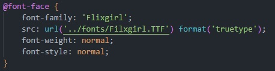

Para usar Fontes externas primeiramente você deve têlas, seja baixando em um site que o(s) autores da fonte te dêm uma licença para usa-la, ou a licença é gratuita, engim você tem que ter posse e direito de uso da fonte ai para você implementala você pode ou importa-la direto do site de onde ela seja. O importe funciona assim @import é a regra, que precede as declarações de seletores e nela declarare o parametro url, onde esta contido o endereço da fonte
A imagem acima demonstra como a importação é feita, você vai precisar criar uma Estilização Interna e ai é só você copiar o código pronto diretamente do site de fontes em questão; Como já se sabe isso é um método que usa URL absoluta e você deve ser siente dos prós e contras disso mas agora vamos ao proximo método de usar fontes externas
Pelo nome desse método você já imagina como ele funciona, vamos usar uma folha de estilo como ambiente para desenvolvermos tudo lá
 A imagem acima possui um font face personalizado isso significa que você tera que criar uma estilização customizada porque o recurso que você vai usar não faz parte dos recursos padrões das CSS.
Note que a declaração font-family é onde você declara o nome da fonte, a declaração src é onde você declara url da fonte(sua localização). e a proxima declaração é format, Essa é uma estilização que é onde você declara qual é o tipo da fonte, como formato dela e existem cinco tipos veja
E por último se tem as estilizações de font weight e font style, basicamente elas estão presentes porque assim, você indica que a fonte deve ser executada livre de efeitos negrito e italico, deixando a "pura" (outra coisa caso a sua fonte tenha mais de um arquivo você teria de desenvolver outro estilo url e depetir o processo o que muda é a 'virgulaespaço' que vão atuar como separador entre um estilo e outro) e ai para incrementar a fonte basta declarar seu nome no estilo font-family, como eu uso shorthands para isso as declarações estão lá
Navegador